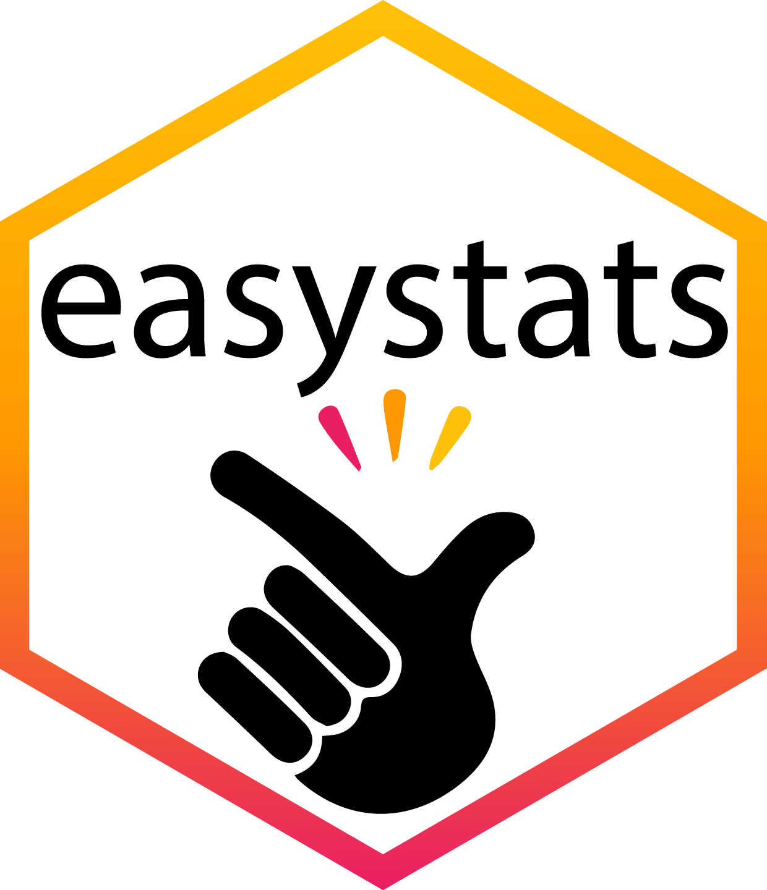

Narrowing the gender gap in computing
Psychology, R, invisibility cloaks, the Pied Piper and a Trojan horse

|
Trends over time1


‘Cracking the gender code’
“Only by tailoring courses to girls’ specific needs can we boost their commitment to computing.” Accenture (2016). Cracking the gender code
- Accenture report with Girls Who Code: Cracking the Gender Code (2016)
- Interviews/Surveys
- 4,000 girls in junior high and high school,
- 500 boys aged 12–18,
- 650 male and female college students,
- 2,000 working women < 30 years (500 working in computing)
- 250 teachers and principals
- 2,200 parents of girls aged 12–18

Cracking the gender code

- Action 3: Attract more women teachers
“62% of girls in high school who have had someone encourage them to study computing and coding say they are likely to major in it at college, compared to only 15% who have had no role model.”

Why do many women choose psychology?

“… capture women’s strong interest in problem-solving, especially around real-world and social issues.”


The reality of studying psychology


- 75% Psychology
- 25% Statistics, research methods, statistical computing
- General R (
|>,here,knitr) - Distributions, sampling theory, probability
- Data viz (
ggplot2,GGally) - Descriptive statistics (
datawizard,dplyr,forcats,readr,tibble,tidyr) - Associations (
correlation) - Gaussian linear models (
afex,broom,car,effectsize,emmeans,ggfortify,lm(),modelbased,parameters,t.test()) - Logistic regression (
glm(),broom) - Mediation (
lavaan) - Robust methods (
robust,WRS2) - Factor analysis (
psych)
- General R (
Computing skills
- Coding
- Functions, loops, data wrangling, data visualisation, reading/writing files, creating objects
- Version control
- Web skills
- Build webpages using
 and Markdown
and Markdown - Can be customized with
htmlandcss
- Build webpages using
- Applications
- Build apps using shiny
- Presentations
- These slides were built using
- These slides were built using